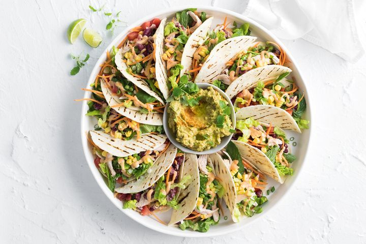

Chicken Tacos
Cook-Time: 17 mins
Servings: 4
Ingredients:
Steps:
-
Preheat a chargrill pan or grill on medium, then
spray the tortillas lightly with oil, after that chargrill
for 1-2 minutes each side or until lightly charred, finally
transfer the tortillas to a plate and cover to keep warm.
-
Place the beans in a large bowl and use a fork to lightly mash,
then add the chicken, tomato, lettuce, carrot, corn, shallot and herbs.
Toss to combine and season, and lastly
fill the tortillas with the chicken mixture and arrange on a serving platter.
-
Mash avocado in a bowl and add the Mexican spice mix and lime juice, to taste, then Place in the middle of the tacos.
Lastly drizzle the tacos with the mayonnaise and sprinkle with extra herbs and serve with lime wedges.